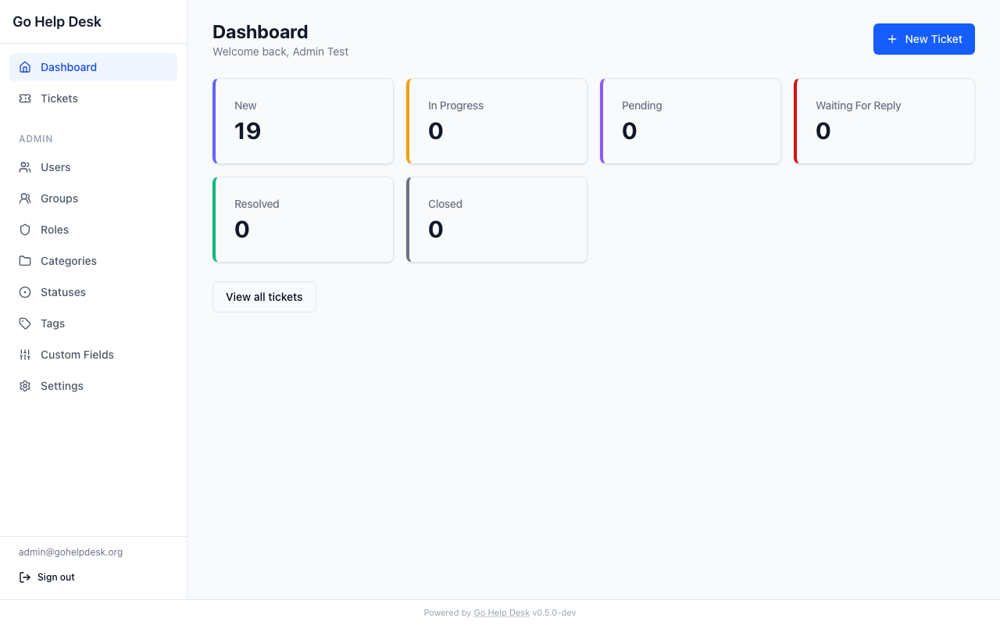
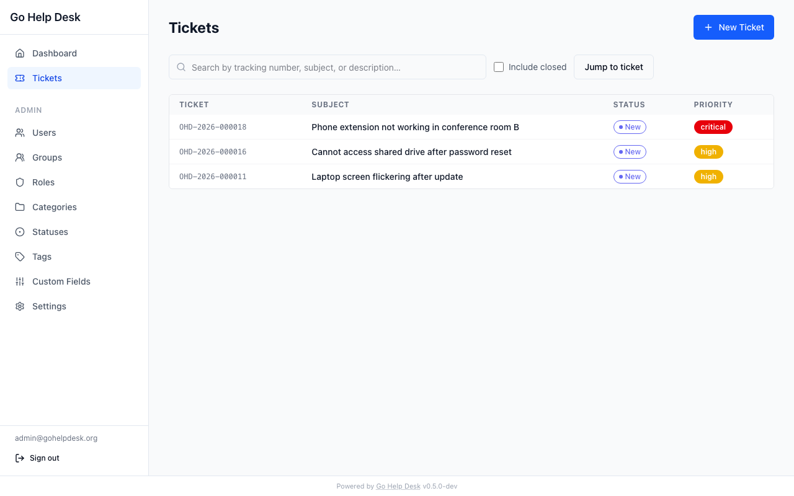
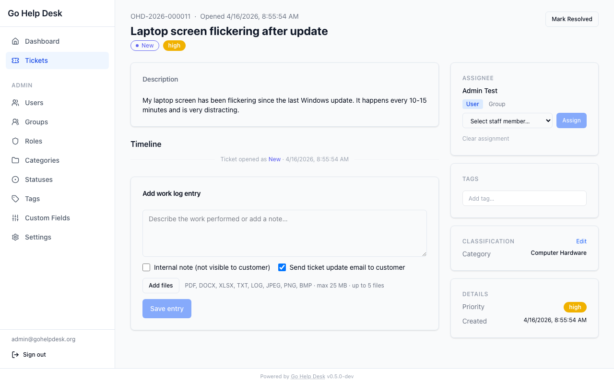

A modern, open-source ticketing system for support teams. Runs on your infrastructure. No SaaS fees, no data leaving your hands.
git clone https://github.com/PubliciaLLC/go-help-desk
cd go-help-desk/docker
cp .env.example .env # set your secrets
docker compose up -d # that's itProduct
A clean, focused UI built for support teams who move fast.



Features
From basic ticketing to enterprise SSO — all in one binary.
Organize tickets with a three-level Category → Type → Item cascade, inspired by Remedy. Each level filters the next.
Configurable statuses, a reopen window for resolved tickets, and automatic closure — so nothing falls through the cracks.
Admin, Staff, and User roles. Group-based staff scope tied to CTI categories — each team only sees what's theirs.
Local accounts with TOTP MFA, and SAML 2.0 for Okta, Azure AD, Google Workspace, and any standard IdP. Admins always keep local-auth access.
Connect tickets as related, parent/child, caused-by, or duplicate-of — across any status, including closed.
Optional SLA targets per priority and category. Track response and resolution times against your commitments.
Notify users and staff on ticket events via SMTP. Fire outbound webhooks for integration with your existing tooling.
Full REST API with API key auth. Plus an MCP server so AI assistants can create and manage tickets as native tools.
Extend behavior with sandboxed WASM plugins. Hook into ticket events, add UI panels, and integrate external systems.
Built on
Chosen for correctness, performance, and longevity — not novelty.
go:embed
sqlc — no ORM magic
Roadmap
Versioned milestones with clear scope — no feature creep.
Deploy in minutes. Your data, your server, your rules.